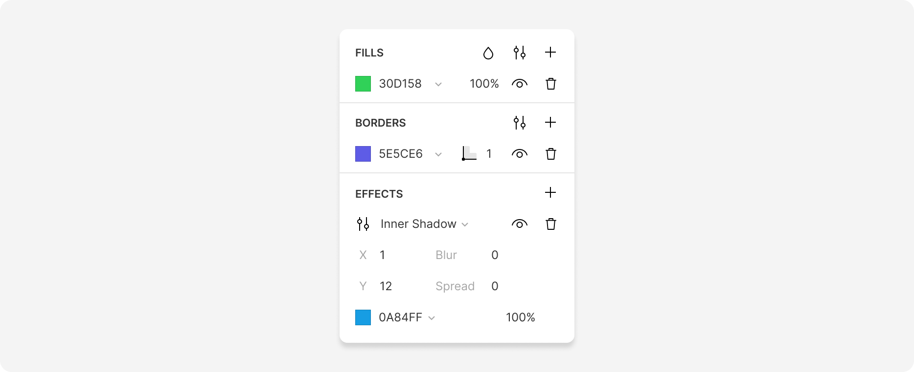
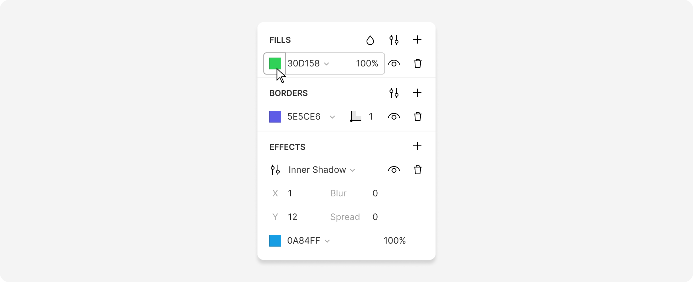
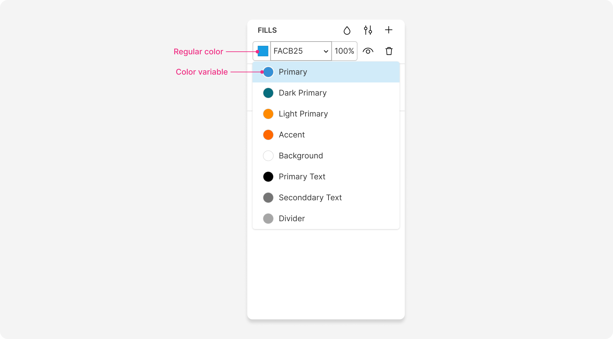

Learn how to work with styling options in Lunacy
Use styling options to define the color and effects of a layer, including:
These options appear in the right panel whenever you select layer.
You can apply them to all types of layers, except for hotspots, and slices, though not all layers have all of the styling options available. For example, groups have tints instead of fills, and component instances have both these options.
Save time by creating layer styles for individual or multiple styling options. You can easily reuse them across different layers, keeping your designs consistent.
To apply a fill, border, or any other styling option to a layer:
+ next to the required styling section in the right panel.
Each layer can have multiple styling options of the same type (except for blurs).
For example, you can apply an image fill to a layer and a semi-transparent solid
fill on top of it. Also, a layer can have several borders or shadows.
Just click the + icon to add another styling setting.
To adjust a layer's appearance, rearrange the order of the styling settings within each section.
You can temporarily hide some of the settings by clicking
To apply styling options to multiple layers,
select them and click + next to any of the styling sections in the right panel.
If you see Click + to replace mixed content in any of the styling sections in the right panel, it means that the selected layers already have different settings for this option.
Click + to override the current settings and apply the same styling option to the selected layers.
Fills define the color of a layer. Fill options are available in all styling sections (except for blurs) and define the color of the selected layer, borders, or shadows.
There are several ways to change the fill color. You can:
To open the color picker, click the color swatch in one of the styling sections in the right panel.
Fill type. Available for the Fill and Border color pickers only.
HEXRGBHSBHSLWith color variables, you can efficiently manage colors in your documents and instantly recolor all the layers using the same variable. You can use color variables for fills, borders, and shadows.
In the right panel, color variables appear as round color swatches, while regular fills, border and shadow colors appear as square swatches.
To edit a color variable, open up the color dropdown menu, and click
With a layer selected, use one of these ways to detach a layer from a color variable:
+ in the right panel to add a new fill and delete the color variable fill.All newly created documents have a color palette which includes document color variables for main, accent, background, and text colors.
To see the entire palette, deselect all layers.
To generate a new one, press
To change palette colors manually, click on the color swatches to open the color picker.
Using the document color palette, Lunacy applies color to shapes automatically depending on their size and predicted purpose. Larger shapes have background colors while smaller elements are assigned primary or accent colors.
If you want the default shape color to be the usual gray, delete all palette
colors by pressing
There are three major types of fills:
You can set these fills for a layer and adjust them in the Fill section of the right panel.
Color picker: The color swatch matches the color of the selected layer. Click it to open the color picker.
HEX color code: Displays the HEX code of a fill. Alternatively, this field shows the name of the color variable applied to the layer.
Color variables: Opens the dropdown menu to view the list of document color variables.
Fill opacity: The opacity of the fill. You can also adjust the opacity inside the color picker itself.
Show/hide fill: Hides the fill.
Delete fill: Removes the fill from the layer.
Add fill: Adds another fill on top of the current one. You can move fills around by dragging the leftmost part of a fill up or down.
Fill properties: This button opens the panel where you can select between the Non-Zero and Even-Odd options for filling overlapping paths.
Blend mode: Blend mode determines how the fill blends with the layer underneath. Activate it to set the blend mode for a fill (when active, the option will replace the Hide and Delete buttons) and click it again to hide it.
To define a solid fill, use any of the ways described in the section above.
Gradients are combinations of two or more colors blended into each other inside the same fill layer.
To add a gradient fill:
Here's a list of actions applicable to all types of gradients:
Del.+.⤒ button next to the gradient bar.Working with linear gradients is pretty straight-forward.
When you select the radial type, the gradient control is the radius of a circle. You can:
When you select an angular gradient, the gradient control takes the form of a circle with color points on its edges. Drag the points around the circle to get the desired gradient effect and add some extra color points if needed.
To create an image fill:
Use the drop-down list below the Choose image button to select the fill method: - Fill. Adjusts the image size to the layer's width. - Fit. Adjusts the image size to fit the layer's height. - Stretch. Stretches the image to fit the layer's width and height. - Tile. Duplicates the image in a tile pattern to fit the layer. The size of tiles is adjustable.
You can quickly replace an image or image fill by holding down
Ctrl / ⌘ and dropping an image from your desktop or the Photos
library in the left panel onto a layer, like in the demo below.
Tints are a quick and easy way to apply a color to groups and component instances. They are particularly useful when you need to adjust the color of a semi-filled layer or a complex icon.
The Tints section only appears in the right panel when you select a group or a component instance.
Unlike other styling options, you can only apply one tint to a layer.
Overrides to tints added to component instances are useful when you are designing tabs or panels with elements that have different states expressed through different colors.
You can add borders to any layer except for hotspots and slices.
The Border section opens up in the right panel when you add a border to an element. Here, you can adjust a border's color, thickness, and shape. In this same section, you can adjust the appearance of lines, curves, arrows, and other open paths since they work more or less like partial borders.
Color swatch. The color swatch matches the color of the border. Click it to open the border color picker.
HEX color code. Shows the name of a color variable or the HEX code of a fill. Open the dropdown menu to view the list of document color variables.
Color variables. Opens the dropdown menu to view the list of document color variables.
Border position. You can choose to place borders on the inside, outside, or center (default) of the layer's bounding box. The only option available for open paths (lines, arrows, curves, etc.) is center.
Show/hide border. Hides the border.
Borders thickness. Determines the thickness of a border or an open path.
Advanced border settings. More adjustment options for the shape and appearance of a border. Read more about advanced settings for borders below.
Add border. Adds another border on top of the current one. You can move borders around by dragging the leftmost part of a border up or down.
Delete border. Removes the border from the layer.
Open up the Effects section in the right panel to add shadows or blurs to your layers:
+ next to Effects in the right panel.You can add drop shadows and inner shadows to your layers. Both types have the same settings that include color, X and Y offsets, blur, and spread. You can overlay multiple shadows of the same or different types in one layer.
There are two types of blur effects you can add to layers:
Gaussian — blurs the selected layer.
Background — blurs the layer underneath the selected layer. To see the background blur effect, delete or hide the fill of the selected layer or bring its fill opacity below 100%. When using this type of blur, you can also adjust the saturation of the blurred layer.